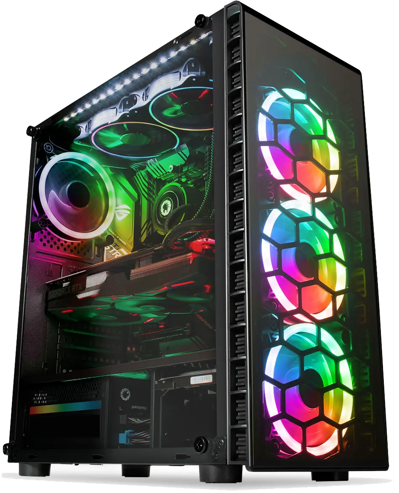
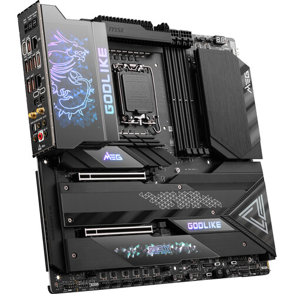

Custom Gaming PC Desktop Computer 16GB Ram 1TB + SSD Intel i7 6th Gen RX 580

$445
Graphics Processing Type
AMD Radeon 8GB RX 580
Custom Bundle
No
Color
Black
MPN
Does Not Apply
Most Suitable For
Gaming
SSD Capacity
128 GB
GPU
GTX 660
Processor Speed
4.00 GHz
Modified Item
No
Brand
Custom, Whitebox
Form Factor
Mid Tower
Operating System Edition
Professional
Type
Desktop
Maximum RAM Capacity
16 GB
Manufacturer Warranty
1 Year
Connectivity
HDMI, USB 2.0, USB 3.0, DisplayPort
Operating System
Windows 10
Features
Wi-Fi included!!
Hard Drive Capacity
1 TB
Country/Region of Manufacture
United States
Storage Type
HDD + SSD
Product Line
gaming desktop
UPC
Does not apply
MSI MEG Z790 GODLIKE MAX LGA 1700 E-ATX Gaming Motherboard
=BH #MSMGZ790GLMX • MFR #MEG Z790 GODLIKE MAX

$1,779.99
Based on the Ada Lovelace architecture and designed to handle the graphical demands of 8K gaming and high frame rates, the PNY NVIDIA GeForce RTX 4090 XLR8 Gaming VERTO EPIC-X RGB Triple Fan Graphics Card brings the power of real-time ray tracing and AI to your PC games. The GPU features 24GB of GDDR6X VRAM and a 384-bit
Condition New: A brand-new, unused, unopened, undamaged item in its original packaging where packaging is ... Read moreabout the condition Brand Does not apply Connectivity Does not apply Model Does not apply Type Does not apply Item model number GS510 Number of Items 1 Power Source Corded Electric Country of Origin China Warranty Type Limited Controller Type Mechanical knob Speaker Size 33 Inches Product Dimensions 7.28 x 6.69 x 4.33 inches Package Type Standard Packaging Model Name Waltz Control Method Touch Recommended Uses For Product For Computers Connectivity Protocol USB Item Weight 1.5 pounds Connectivity Technology USB Speaker Maximum Output Power 3 Watts Special Feature function(f) var _np=window.P._namespace"DetailPageProductOverv Mounting Type Plug Mount,Tabletop Color Black Surround Sound Channel Configuration 2.0 Compatible Devices Laptop, Television, Personal Computer Is Waterproof FALSE Audio Output Mode Stereo Included Components 2 speakers, USB cable, 3.5mm audio and mic cables Speaker Type Surround Sound
Fully immerse yourself into high-definition virtual worlds with the ROG Strix XG349C 34" 21:9 Ultrawide Curved IPS Gaming Monitor from ASUS. Designed for gaming enthusiasts, the XG349C provides a high-quality image on a curved ultrawide